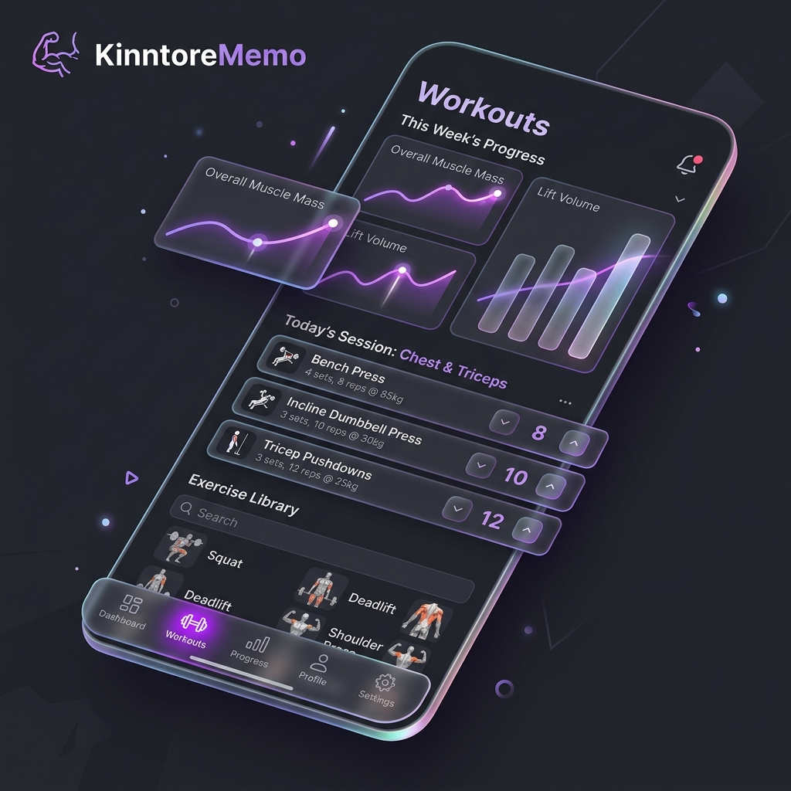

自己ベストを更新し続ける！筋トレを可視化することの心理的効果
「筋トレがなかなか継続しない…」そんな悩みはありませんか？本記事では、トレーニング重量や回数を克明に記録し可視化することが、脳の報酬系に与えるプラスの影響について解説します。
記事を読む
なぜ面白いのか？タワーディフェンスの経路設計における「迷路化」の魅力
敵の移動ルートをプレイヤーが自由に制御できる「オープンフィールド型タワーディフェンス」。ゲームをよりスリリングにするための、最適な迷路構築メカニクスとAIの経路探索アルゴリズムについて。
記事を読む個人開発における「完成させる技術」とモチベーションの保ち方
数多くのプロジェクトを着手するものの、途中で挫折して「未完のままで放置」になっていませんか？最後までプロダクトを作りきり、リリースするためのマインドセットと具体的なタスク管理手法を共有します。
記事を読む